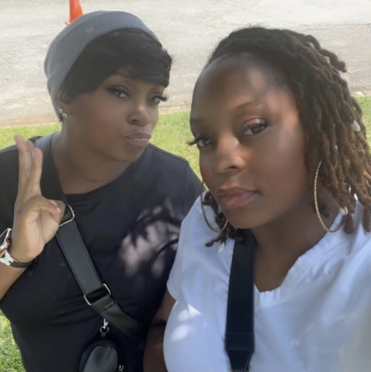

About Me
Me and my sister have always been close. We used to do everything together as far as dressing the same everyday, eat the same foods, buy the same things and even worked a few jobs together. Our teenage years we remained that way and as we got older we got more and more connected. Our kids are all best friends with each other and they have a tight bond. Coming from a family of 5 we were what they called "two peas in a pod".
Straight out of high school, she got married and had a baby. I felt like i was alone. Having that twin connection meant alot to me and when she moved out of the state i was emotional and feeling a way that was hard for me to describe and only she knew how i felt exactly.